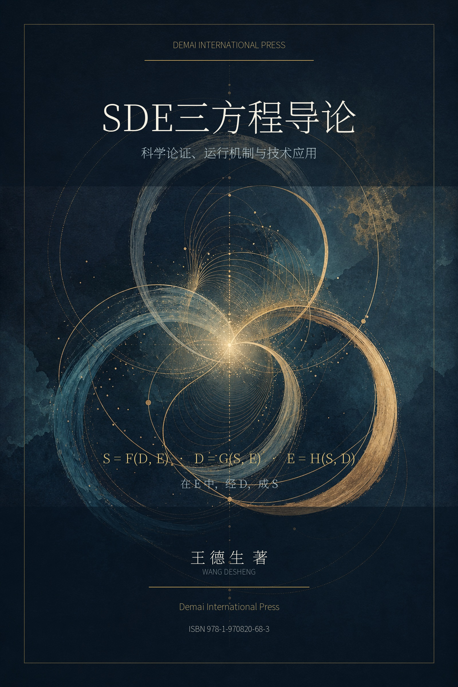

专著选读 · 01
第二章 三方程的标准形式与理论地位
三条方程究竟是定义、约束还是动力假说？本章逐式解释S、D、E与F、G、H，正面处理“万能公式”与“循环论证”两类质疑，是进入全书最清晰的理论门户。
阅读全文 →
全书以三条方程——S=F(D,E)、D=G(S,E)、E=H(S,D)——把结果、路径与条件封闭为一个具有记忆、历史、反身与可变边界的互生系统。F、G、H不是万能解析式，而是必须在每个具体领域中重新操作化、测量、比较和证伪的生成算子。
三条方程究竟是定义、约束还是动力假说？本章逐式解释S、D、E与F、G、H，正面处理“万能公式”与“循环论证”两类质疑，是进入全书最清晰的理论门户。
阅读全文 →一套跨学科语言怎样真正进入科学？本章给出变量定义、竞争模型、消融实验、干预和失败条件，把“能够解释”推进到“可能被数据推翻”。
阅读全文 →本章主动汇集对三方程最强的反驳：为什么必须是三维、数学是否只是装饰、第三维会不会成为万能和解，并规定理论在失败时应当怎样收缩、降级与改写。
阅读全文 →第一至四编依次建立S、D、E三个不可还原维度，并逐式展开三条方程；第五至六编处理123原理的SDE应用与六路径发生学；第七编进入科学论证、智能体与现实应用；第八编用自适应网格、科学发现、长期智能体、教育、组织和科学文明完成压力测试。
附录A—I提供术语表、领域建模清单、三原理与六路径矩阵、智能体数据结构、预注册清单、研究登记表、版本协议及经核验的参考文献。全书明确区分体系内部原始材料、同行评议近邻机制、预印本与技术报告，以及作者提出的候选模型。